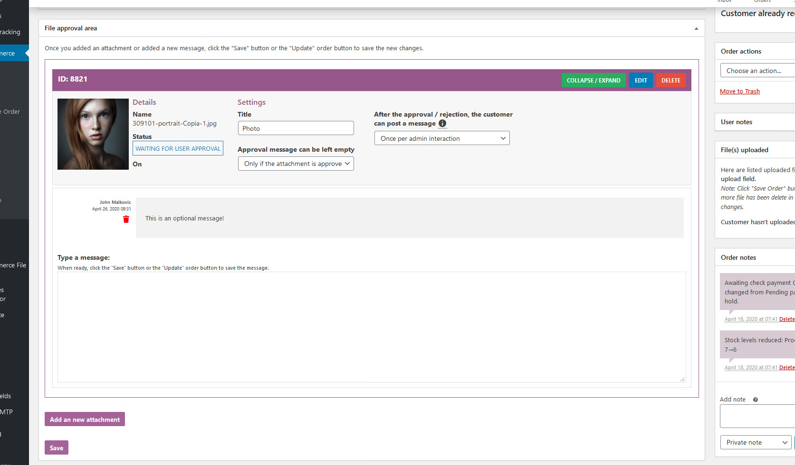
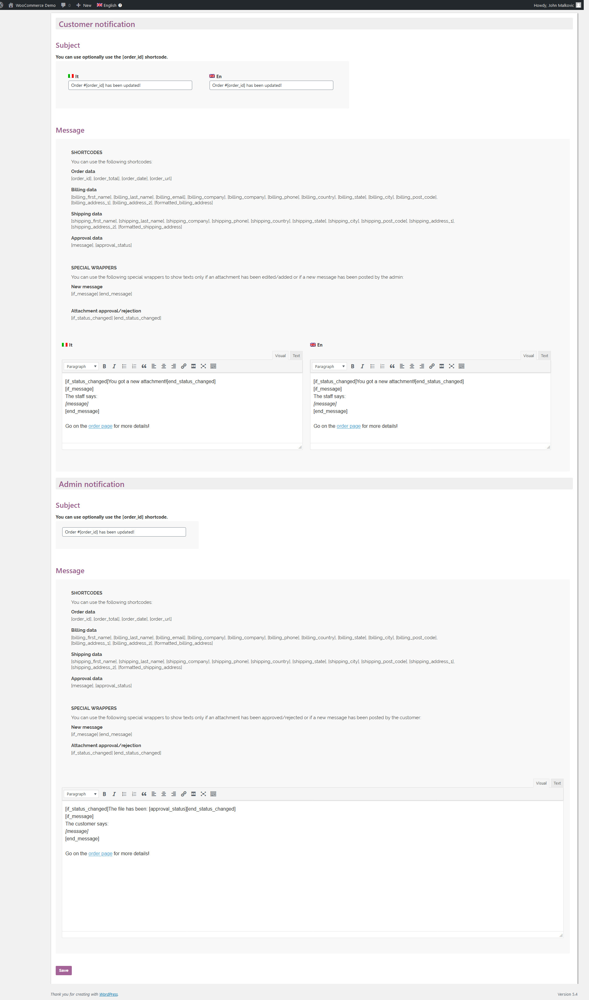
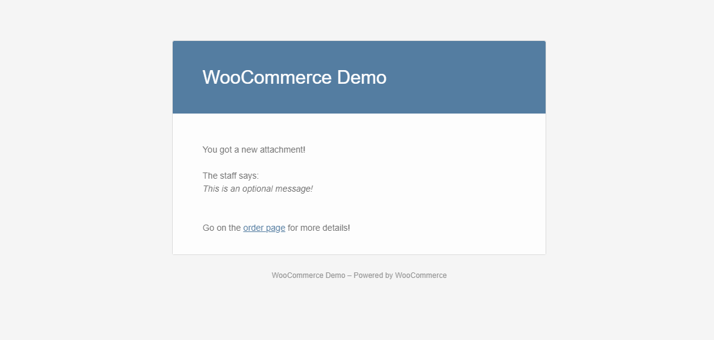
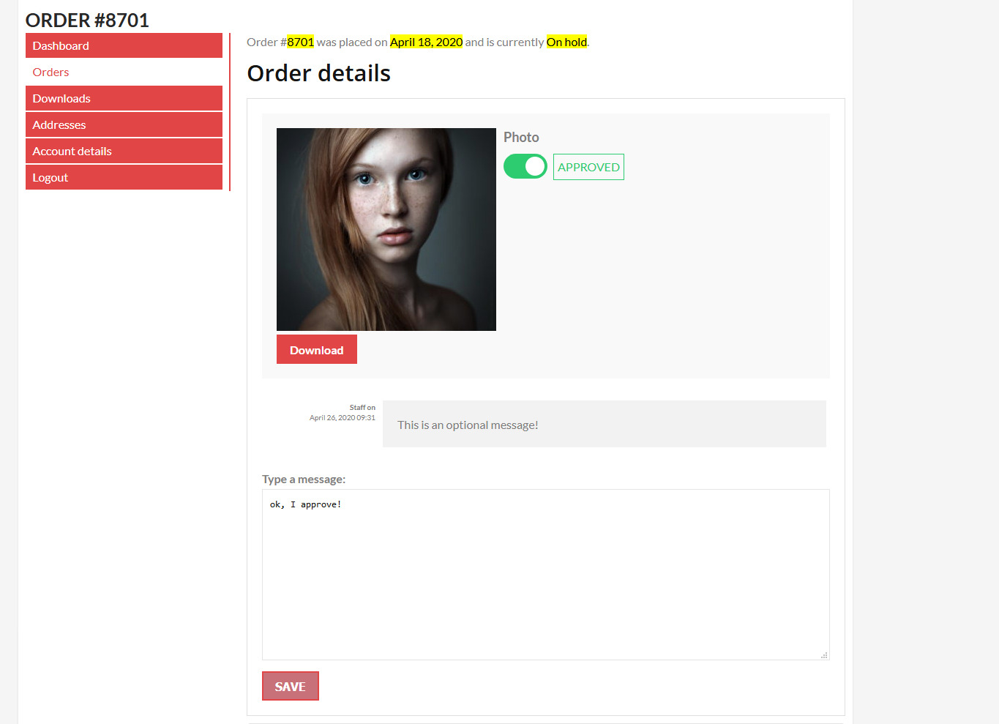
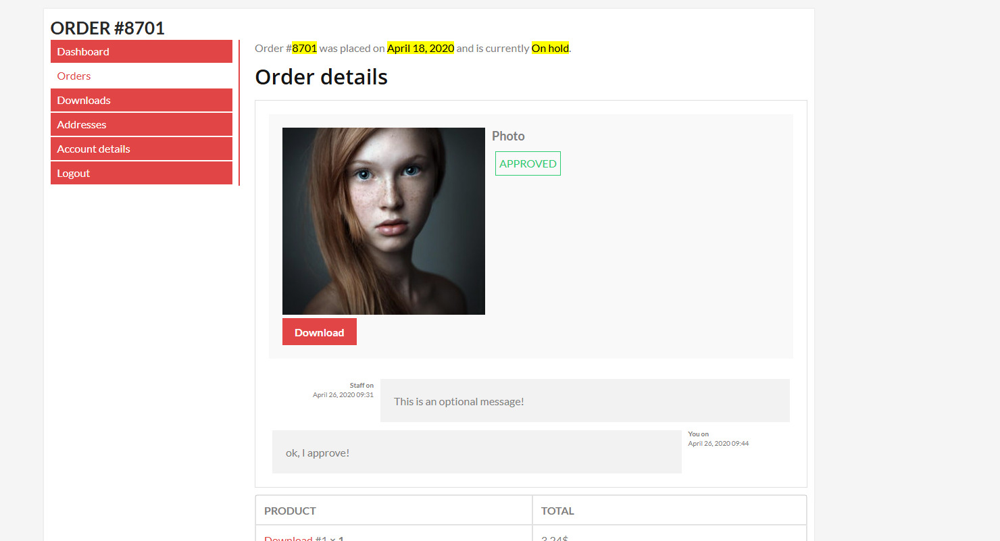

Through the WooCommerce File Approval -> Settings menu you can set different options like some visual adjustments and email notifications.
Through the WooCommerce File Approval -> Email texts menu you can customize and translate (WPML) the text displayed in the notification emails.
The process is straightforward:

Every time the admin edit the attachments (so the user needs to re approve/reject it) or posts a message, The customer receives an email notification. Same things happens when the customer approves / rejects an attachments or if he posts a mesage. Email texts can be configured (and eventually translated via WPML) via the special Email texts menu.


The approva area can be accessed through the order details page. The user can then approve / reject and optionally leave a message (according the attachments settings set by the admin). By defult, the user won't be able to post any further message after the approval / rejections. However, this behaviour can be changed any by the special option the admin finds in the attachment option area

